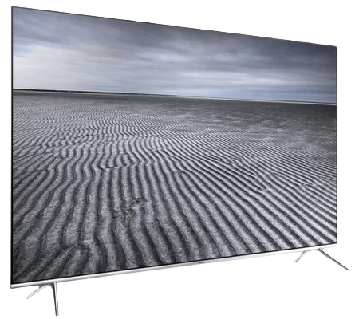

Le magasin Cobra Paris nous a ouvert ses portes pour tester le téléviseur Samsung UE55KS7000. Il s'agit du modèle SUHD le plus abordable chez Samsung et il bénéficie de la certification Ultra HD Premium. Ce téléviseur embarque une dalle 10 bits de 55 pouces affichant une définition Ultra HD de 3 840 x 2 160 px, avec un système de rétroéclairage Edge Led et une compatibilité HDR. Il intègre également un processeur Quad Core et utilise un filtre Quantum Dots permettant une couverture de 96 % de l'espace colorimétrique DCI-P3. Le téléviseur Samsung UE-55KS7000 est vendu environ 1 900 €. Il existe également en version 49 pouces (Samsung UE49KS7000) pour environ 1 600 €.
Ce téléviseur embarque une dalle de type PSA. Cette technologie permet d'obtenir un bon contraste, au détriment des angles de vision qui sont plus réduits que sur une dalle IPS ou Oled. Sur ce modèle, nous avons constaté une perte de luminosité allant jusqu'à 60 % à 45°. L'écran est brillant, mais le revêtement antireflet Moth Eyes (Ultra Black) — qui imite la structure des yeux de mite pour absorber au maximum la lumière ambiante — est très convaincant et permet de limiter au maximum les reflets.